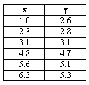
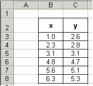
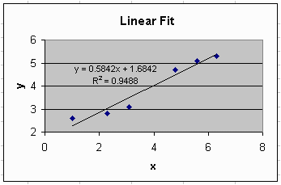
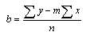
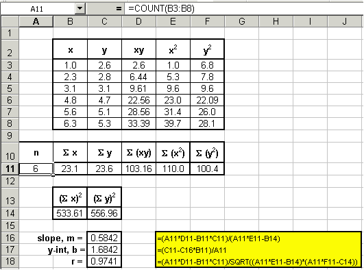
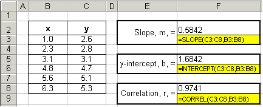

|
Physics Laboratory |

|
Excel Tutorial #11 |
|
10. Statistics E |
Linear Regression and Excel |
12. Helpful Hints F |
(See our Tutorial Page for more information about linear regression methods. You may also wish to take a look at how we analyzed actual experimental data using linear regression techniques.)
Sample data.

Say we have a set of data, ,
shown at the left. If we have reason to believe that
there exists a linear relationship between the variables x and y,
we can plot the data and draw a "best-fit" straight line through the data.
Of course, this relationship is governed by the familiar equation
,
shown at the left. If we have reason to believe that
there exists a linear relationship between the variables x and y,
we can plot the data and draw a "best-fit" straight line through the data.
Of course, this relationship is governed by the familiar equation
 .
We can then find the slope, m, and y-intercept, b,
for the data, which are shown in the figure below.
.
We can then find the slope, m, and y-intercept, b,
for the data, which are shown in the figure below.

Enter your data as we did in columns B and C. The reason for this is strictly cosmetic as you will soon see.


Linear regression equations.
If we expect a set of data to have a linear correlation,
it is not necessary for us to plot the data in order to
determine the constants m (slope) and
b (y-intercept) of
the equation .
Instead, we can apply a statistical
treatment known as linear regression
to the data and determine these constants.
Given a set of data
with n data points, the slope, y-intercept and correlation coefficient, r,
can be determined using the following:



(Note that the limits of the summation, which are i to n, and the summation indices on x and y have been omitted.)
Implicitly applying regression to the sample data.
It may appear that the above equations are quite complicated, however upon inspection, we see that their components are nothing more than simple algebraic manipulations of the raw data. We can expand our spread sheet to include these components.
- First, add
three columns that will be used to determine the quantities xy,
x2 and y2, for each data point.
- Next, use
Excel to evaluate the following:
Sx,
Sy,
S(xy),
S(x2),
S(y2),
(Sx)2,
(Sy)2.
Recall that the symbol, S, means
"summation". Additionally, the term xy is the product of x and
y, that is: x * y. Also, the term
S(x2) is very different than the term
(Sx)2. Be careful with your order
of operations!
- Now use Excel to count the number of data points, n. (To do this,
use the Excel COUNT() function. The syntax for COUNT() in this example is:
=COUNT(B3:B8) and is shown in the formula bar in the screen shot below.
- Finally, use the above components and the linear regression equations
given in the previous section to calculate
the slope (m), y-intercept (b) and
correlation coefficient (r) of the data. If you are careful, your
spread sheet should look like ours. Note that our equations for the slope,
y-intercept and correlation coefficient are highlighted in yellow.

Linear regression with built-in functions.
It is plain to see that the slope and y-intercept values that were calculated using linear regression techniques are identical to the values of the more familiar trendline from the graph in the first section; namely m = 0.5842 and b = 1.6842. In addition, Excel can be used to display the R-squared value. Again, R2 = r2. From the graph, we see that R2 = 0.9488. From our linear regression analysis, we find that r = 0.9741, therefore r2 = 0.9488, which is agrees with the graph.
You should now see that the Excel graphing routine uses linear regression to calculate the slope, y-intercept and correlation coefficient.
Excel has three built-in functions that allow for a third method for determining the slope, y-intercept, correlation coefficient, and R-squared values of a set of data. The functions are SLOPE(), INTERCEPT(), CORREL() and RSQ(), and are also covered in the statistics section of this tutorial.
The syntax for each are as follows:
- Slope, m: =SLOPE(known_y's, known_x's)
- y-intercept, b: =INTERCEPT(known_y's, known_x's)
- Correlation Coefficient, r: =CORREL(known_y's, known_x's)
- R-squared, r2: =RSQ(known_y's, known_x's)
Here is how we would analyze our data using these built-in Excel functions. Again, the equations for each calculation are highlighted in yellow.

So, to reiterate, we can determine the slope, y-intercept and correlation coefficient of any set of data using three Excel methods:
- Plot the data and add a trendline
- Implicitly use linear regression techniques
- Use Excel's built in functions
If you have a question or comment, send an e-mail to
.
|
10. Statistics E |

|
12. Helpful Hints F |
Copyright © 2000, Clemson University. All Rights Reserved.
This page was created by
.